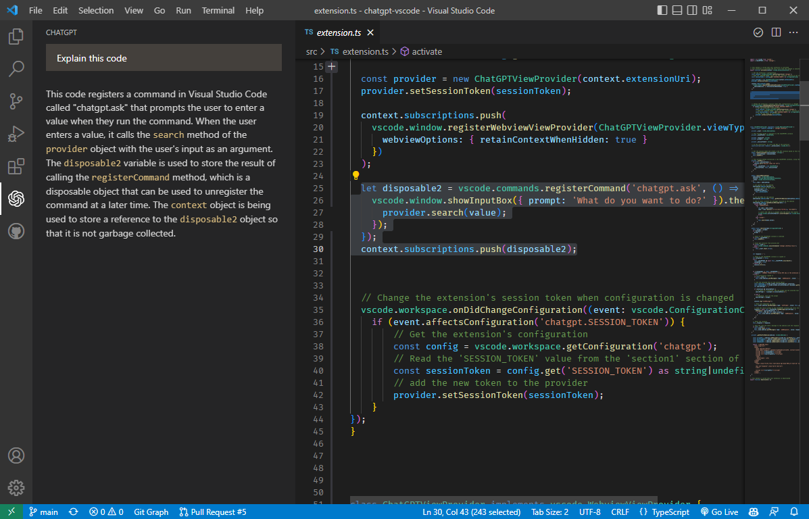

Code Review Chatbot Vscode
Code review before you even submit a PR
ChatGPT and GPT4 extension for VSCode


This Visual Studio Code extension allows you to use the ChatGPT API to generate code or natural language responses from OpenAI's ChatGPT or GPT4 to your questions, right within the editor.
Supercharge your coding with AI-powered assistance! Automatically write new code from scratch, ask questions, get explanations, refactor code, find bugs and more üöÄ‚ú®
Links:​

Features​
- üí° Ask general questions or use code snippets from the editor to query ChatGPT via an input box in the sidebar
- üñ±Ô∏è Right click on a code selection and run one of the context menu shortcuts
- automatically write documentation for your code
- explain the selected code
- refactor or optimize it
- find problems with it
- üíª View ChatGPT's responses in a panel next to the editor
- üöÄ See the response as it is being generated in real time
- üí¨ Ask follow-up questions to the response (conversation context is maintained)
- üìù Insert code snippets from the AI's response into the active editor by clicking on them
Setup​
To use this extension, install it from the VSCode marketplace.
- After the installation is complete, you will need to add your OpenAI API key to the extension settings in VSCode. To do this, open the
Settingspanel by going to theFilemenu and selectingPreferences, thenSettings. - In the search bar, type
ChatGPTto filter the settings list. - In the ChatGPT section, enter your API key in the top field
After completing these steps, the extension should be ready to use.
Building from source (not applicable for VSCode marketplace version)
To build the extension from source, clone the repository and run npm install to install the dependencies. You have to change some code in chatgpt module because VSCode runtime does not support fetch. Open node_modules/chatgpt/dist/index.js and add the following code at the top of the file:
import fetch from 'node-fetch'
Then remove the following lines (around line 20):
// src/fetch.ts
var fetch = globalThis.fetch;
You also need to replace the following part near the top of the file:
// src/tokenizer.ts
import { encoding_for_model } from "@dqbd/tiktoken";
var tokenizer = encoding_for_model("text-davinci-003");
function encode(input) {
return tokenizer.encode(input);
}
with
// src/tokenizer.ts
import GPT3TokenizerImport from "gpt3-tokenizer";
var GPT3Tokenizer = typeof GPT3TokenizerImport === "function" ? GPT3TokenizerImport : GPT3TokenizerImport.default;
var tokenizer = new GPT3Tokenizer({ type: "gpt3" });
function encode(input) {
return tokenizer.encode(input).bpe;
}
due to the fact that the @dqbd/tiktoken module is causing problems with the VSCode runtime. Delete node_modules/@dqbd/tiktoken directory as well. If you know how to fix this, please let me know.
In file node_modules/chatgpt/build/index.d.ts, change line 1 to
import * as Keyv from 'keyv';
and line 4 to
type FetchFn = any;
Obtaining API key​
To use this extension, you will need an API key from OpenAI. To obtain one, follow these steps:
- Go to OpenAI's website. If you don't have an account, you will need to create one or sign up using your Google or Microsoft account.
- Click on the
Create new secret keybutton. - Copy the key and paste it into the
API Keyfield in the extension settings.
Settings​
The extension can be configured or customized by changing several settings.
You can choose between ChatGPT and GPT4 by changing the Model setting (only if you already have access to GPT4 API). A custom API URL can also be set in the API URL field (probably looks something like https://openai.xxxxxx.net/v1, can be used to connect to a self-hosted instance of the API or a proxy).
Using the Extension​
To use the extension, open a text editor in Visual Studio Code and open the ChatGPT panel by clicking on the ChatGPT icon in the sidebar. This will open a panel with an input field where you can enter your prompt or question. By clicking enter, it will be sent to ChatGPT. Its response will be displayed below the input field in the sidebar (note that it may take some time for it to be calculated).

You can also select a code snippet in the editor and then enter a prompt in the side panel, or right-click and select "Ask ChatGPT". The selected code will be automatically appended to your query when it is sent to the AI. This can be useful for generating code snippets or getting explanations for specific pieces of code.
To insert a code snippet from the AI's response into the editor, simply click on the code block in the panel. The code will be automatically inserted at the cursor position in the active editor.

You can select some code in the editor, right click on it and choose one of the following shortcuts from the context menu:
Commands:​
Ask ChatGPT: will provide a prompt for you to enter any queryChatGPT: Explain selection: will explain what the selected code doesChatGPT: Refactor selection: will try to refactor the selected codeChatGPT: Find problems: looks for problems/errors in the selected code, fixes and explains themChatGPT: Optimize selection: tries to optimize the selected code
Ask ChatGPT is also available when nothing is selected. For the other four commands, you can customize the exact prompt that will be sent to the AI by editing the extension settings in VSCode Preferences.
Because ChatGPT is a conversational AI, you can ask follow-up questions to the response. The conversation context is maintained between queries, so you can ask multiple questions in a row (this can be disabled in the extension settings.).
If you aren't satisfied with an answer and would like to retry the request, click ctrl+shift+p and select Retry ChatGPT request. To reset the conversation context, click ctrl+shift+p and select ChatGPT: Reset Conversation.
Please note that this extension is currently a proof of concept and may have some limitations or bugs. We welcome feedback and contributions to improve the extension. Also check out CodeGPT extension that uses official OpenAI API and also supports other GPT3 models. If you enjoy this extension, please consider buying me a coffee ☕️ to support my work!

Credits​
- This wouldn't be possible without OpenAI's ChatGPT
- The extension makes use of chatgpt-api (by Travis Fischer), which uses unofficial ChatGPT API in order to login and communicate with it.
- The project was started by mpociot
v0.3inspired by barnesoir/chatgpt-vscode-plugin and gencay/vscode-chatgpt